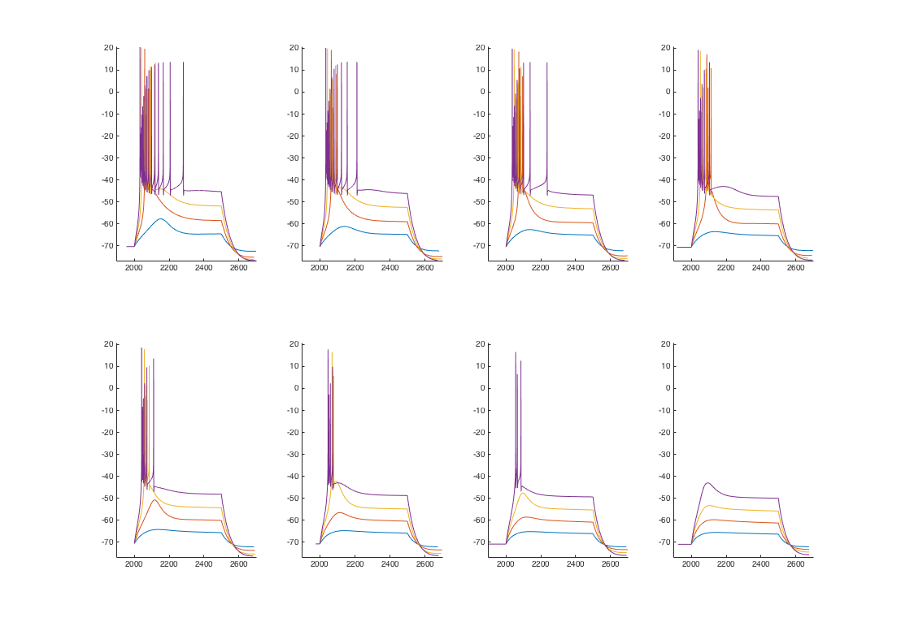

This is the readme for the models associated with the papers: Connelly WM, Crunelli V, Errington AC. (2016) Passive Synaptic Normalization and Input Synchrony-Dependent Amplification of Cortical Feedback in Thalamocortical Neuron Dendrites. J Neurosci. Mar 30;36(13):3735-5 Connelly WM, Crunelli V, Errington AC. (2015) The Global Spike: Conserved Dendritic Properties Enable Unique Ca2+ Spike Generation in Low-Threshold Spiking Neurons. J Neurosci. Nov 25;35(47):15505-22. This model was developed in Neuron 7.2. The GUI will provide one click options to run certain simulations from the above papers. Data is saved to tab delimited *.dat files which you can then plot in other software. mosint.hoc, along with rlgntc5-10-95.geo provide the model description. proc.hoc provides a small number of helper functions. analysisProc.hoc provides a large number of simulation control functions. Some of these are used in the paper, and some are not. Example run: After compiling the mod files and starting the simulation with mosinit.hoc (https://senselab.med.yale.edu/ModelDB/NEURON_DwnldGuide.html has help if needed) if you press the "Generate Fig. 9C" button (2015 paper) the data file is generated and saved in a txt file in a minute or so. You can use your favorite program to plot this. The sample included matlab program simple_plot will graph this: 